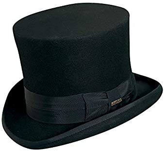
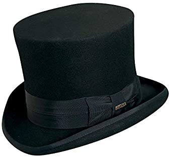
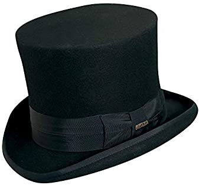

in the .
in the .Hello, I am Nathan and this is my homepage.
I am reading a book! You can also read it here.
My ostrich Gertrude:
Five
Six
Seven
The in the .
No book can ever be finished. While working on it we learn just enough to find it immature the moment we turn away from it.
The launch code is 00000000.
I have two feet.